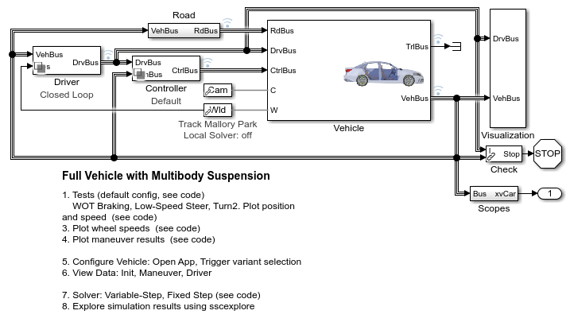
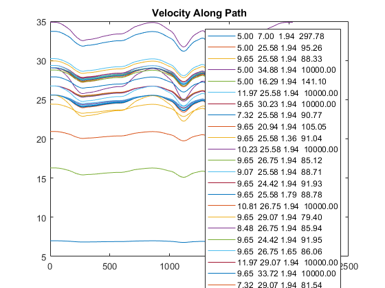
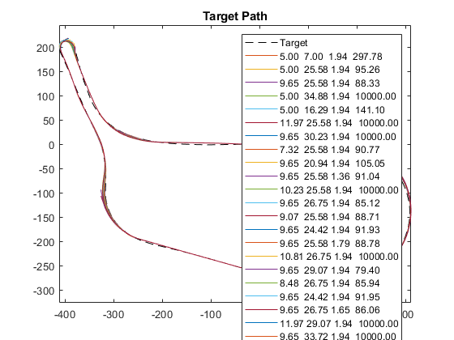
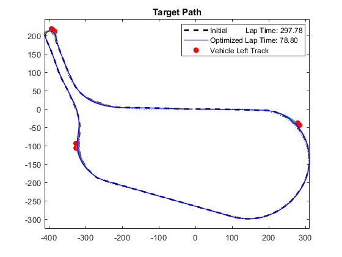
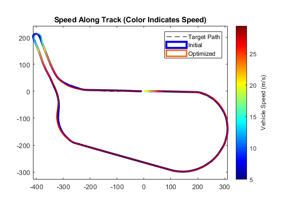
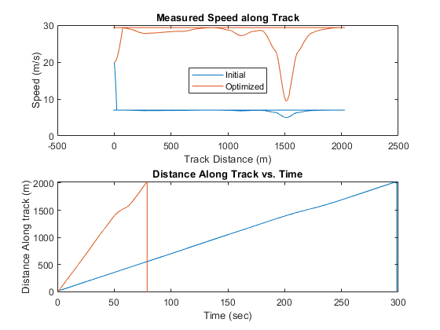

Minimize Lap Time Using Optimization, Mallory Park (No Elevation Change)
This example shows how to minimize lap times using optimization algorithms using the Mallory Park Racing Circuit. This optimization assumes no elevation to shorten the optimization process.
Results of Optimization
Iter Func-count f(x) MeshSize Method
0 1 297.767 4.646
1 1 297.767 1.162 Refine Mesh
2 2 95.273 2.323 Successful Poll
3 2 95.273 0.5808 Refine Mesh
4 5 88.3225 1.162 Successful Poll
5 5 88.3225 0.2904 Refine Mesh
6 10 88.3225 0.0726 Refine Mesh
7 15 85.093 0.1452 Successful Poll
8 20 79.3947 0.2904 Successful Poll
9 25 79.3947 0.0726 Refine Mesh
10 30 79.3947 0.01815 Refine Mesh
11 36 78.8 0.0363 Successful Poll
12 41 78.8 0.009075 Refine Mesh
Optimization terminated: mesh size less than options.MeshTolerance.
Elapsed time for optimization = 697.7157
      Results of Optimization with Formula Student Vehicle
Here is the GGV diagram for the fastest lap with a Formula Student Vehicle. The vehicle aerodynamics enable a larger downforce which permits higher speeds in the corners which is visible in the funnel-shaped surface.